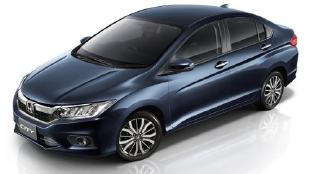
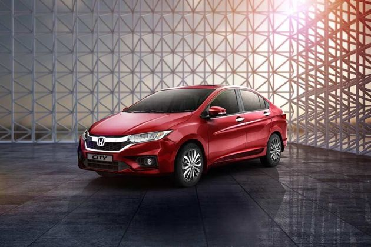

Honda City
Innovative technologies, progressive design, and exciting versatile equipment options: The Audi A6 Sedan combines these values into an exceptionally sporty and elegant symbiosis. Elegant and progressive at the same time, this versatility and comfort open up a new kind of mobility.
REVIEW
The new car receives a host of styling changes and features that make it more modern and up to date, and yet, unmistakably, a City. The new sharp-edged bumper design and wide honeycomb grille give it a sleek look that reminds you of the latest Honda Civic that's sold overseas. The chrome bar atop the grille is now thinner but protrudes more, and extends at the sides to meet the all-new LED headlamps (VX and ZX) with LED Daytime Running Lights (these are standard across the range). These changes will certainly be a huge draw with customers for their premium imagery and bright illumination.
LEDs, in fact, also feature in the fog lights, rear tail-light cluster, trunk lid spoiler stop lamp and on the wing mirror indicators giving the City a sharp, distinctive look. The top variants also get all-new 16-inch alloy wheels, and, with them, wider tyres – both of these do well to improve the City's stance.
Styling
If understated is a style, the Honda City has it in spades. The handsome sedan has aged, but has mostly avoided looking dated.The exterior hasn’t changed for a few years now, only adding LED headlights and lashings of chrome in a slow, steady march to today’s appearance. It’s handsome and subtle; the most expressive element perhaps is the corporate trapezoidal grille.Inside, the cockpit is busy, but precise. It’s smartly trimmed in a wide number of materials, but subtle hues keep the interior from looking too busy.Compared to the newer Audi A4, the older A6 shows its age. When the A6 is taken alone, it’s perfectly fine.
A low, slim dash hides a pop-up screen and we actually prefer it to the newer Audis fitted with a fixed screen. The permanent fixture in newer models has a bolted-on look that we just can’t get behind.

Performance
The Fourth Generation Honda City is available in both petrol and diesel version. The petrol model carries a 1.5-litre, SOHC, in-line four cylinders i-VTEC engine. The powertrain of the car comes mated to either a 5-speed manual or a 5-speed automatic gearbox, which churns out a maximum power output of 117bhp. While for the first time Honda has brought City in diesel model which in houses a 1.5 litre i-DTEC engine that produces a power output of 98.6bhp. What makes the City so good for city driving is continuous torque even on lower RPMs. You just don't need to change gears frequently. The midranges are also strong but here you miss that punch and the third gear is a bit hard and where you need to change gears a little early. After this, the fourth and fifth gears are smooth and the car goes quite well till the 6000rpm. The car reaches 150kmph mark with ease and the highest speed in terms of diesel variant is 190kmph, while, with petrol fuel trim, it achieves a speed of 165kmph. The good thing about Honda City is that it stays stable even on high speeds. Both the automatic and manual transmissions are smooth and there is a little to no gear lag. The top-end variant City VX CVT comes with paddle shift which is something you can find only in a limited number of cars. Paddle shift allows you to shift gears manually even in an automatic transmission car on a single touch. In a nutshell, Honda City is a good urban drive, which comes with a blend of performance and luxury. Check out the following video.

Comfort & Quality
Honda City isn’t just a Brio with a boot, but a fresh, all-new compact sedan. The second-generation Amaze is built on an all-new platform, which will be a base for future models. It has grown – the Amaze is longer, wider and taller than the outgoing car, while the wheelbase is a significant 65mm longer than before. Overall, the design of the new Amaze is quite striking and nothing like the previous car’s. The buff and vertical nose looks quite unconventional and could split opinion, but what works to make the Amaze look wider than it is, is the thick, signature chrome grille bar and the stretched, flat bonnet. The sides are a lot cleaner and get a single character line which looks neat but not quite as distinctive as the prominent two slashes across the earlier Amaze’s flanks.
Features
ARAI Mileage 17.4 kmpl
City Mileage13.86 kmpl
Fuel Type petrol
Engine(cc)1497Max
Power117.3bhp@3600rpm
Max Torque450Nm@1750rpmSeating5
Engine Description1.5-litre 78.9bhp 16V i-DTEC Diesel Engine
TransmissionTypeAutomaticCargo
Volume420Liters
